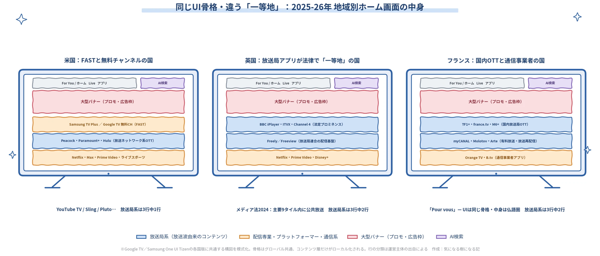

図1 消費者向けネット動画の通信量
世界の消費者向けインターネット動画の通信量（月あたり、エクサバイト）。2022年は2018年時点の予測値です。
出典：Cisco Visual Networking Index: Forecast and Trends, 2017–2022（2018年11月発表）付録の表。2017年は推計、2022年は予測。版ごとに動画の定義が違うため、ほかの版の数字とはつないでいません。
数値表
参考：YouTubeに1分間に投稿される動画の量
YouTubeの公式発表の値です（2019年以降の公式な更新はありません）。
図2 新作は減っても、作品の在庫は増え続ける
左：米国で制作された番組の新規開始数（2019〜2025年）。右：5カ国で視聴できる作品の総数。それぞれ対象が違うため、別々の目盛りで示しています。
米国で制作された番組の新規開始数（Luminate）
有料配信のオリジナル番組は2022年の596本をピークに3年連続で減り、2025年は384本（ピーク比36%減）。Netflixも196本（2022年）→133本（2025年）。米国制作・英語の番組。地上波とケーブルはゴールデンタイムのみ。大人向けの実写とアニメで、台本のない番組（リアリティ番組など）を含み、子ども向けアニメ、ショート動画、特番、テレビ映画は除きます。出典：Luminate「2025 Year-End Film & TV Report」。
視聴できる作品の総数（Gracenote）
米・英・加・墨・独の5カ国、放送と配信の合計。2023年6月は86.7%が配信サービス上。出典：Gracenote／Nielsen「State of Play」2023年。
その後の伸び（前年比、2026年8月更新）：主要5社の定額制配信の作品数 +10%（HBO Maxを含む6社では +24%）、FASTのユニーク作品数 +14.5%（22.5万作品超）。出典：Gracenote Data Hub。
数値表
図3 探す疲れの指標
上段は、同じ調査で前回と比べられる項目。下段は、別の調査の単年の指標です。
上段 前回からの変化（米国、Hub Entertainment Research「Conquering Content」）
サービスの区別・新作の追いかけ
「この作品のためだけに加入した」人
番組の多さをどう感じるか（2023〜2025年）
米国の約1,600人（16〜74歳、毎年10月調査）。左は前回調査と2026年版、右は2022・2024・2026年版、下は2023〜2025年版（分割サンプル約800人、2つの意見の間で選ぶ形式のため、残りは「どちらでもない」寄り）。数値はHub Entertainment Researchの調査結果を引用し、図と分析は筆者によるもの。
下段 単年の指標（調査ごとに対象が違います）
数値表
図4 配信サービスの作品を知るきっかけ・見る場所の探し方
米国の視聴者に聞いた結果です。配信サービスのアプリの中のおすすめから作品を知る人は、2025年も2026年も14%のままで、友人の口コミの半分にもなりません。
新しいお気に入り番組を最初に知ったきっかけ（2025年→2026年）
どのサービスで見られるかの調べ方
出典：Hub Entertainment Research「Conquering Content」2025年版・2026年版（米国、過去1年に新しいお気に入り番組ができた人：2025年1,183人、2026年1,165人）。右は2026年版。2026年に設問が一部改訂されている（選択肢「配信サービスのおすすめ／提案」→「配信サービスのおすすめ」など）。2年分を並べたのは筆者。数値は同調査の結果を引用し、図と分析は筆者によるもの。
数値表
図5 新しいお気に入り番組を、どこで見ているか
過去1年に新しいお気に入りの番組ができた人に、その番組をどこで見ているかを聞いた結果です。2016年はほぼ拮抗していましたが、2024年には配信が8割を超えました。
米国のテレビ視聴者（各年約1,600人、16〜74歳）。「有料放送のチューナー経由」は、MVPD（ケーブル・衛星などの有料多チャンネル放送事業者）のセットトップボックスでの視聴で、リアルタイム、事業者が提供するオンデマンド（VOD）、録画を含みます。「ネット配信」の内訳（有料配信・広告付き配信・FASTなど）は公表されていません。両者の合計が100%にならない年は、残りが「その他」などとみられます。出典：Hub Entertainment Research「Conquering Content」2024年版。数値は同調査の結果を引用し、図と分析は筆者によるもの。
いちばんよく使うテレビに、何がつながっているか
家庭でいちばんよく使うテレビで見られる視聴手段の割合です。2022年に配信が有料放送に追いつき、2024年には配信60%、有料放送38%と差が開きました。
米国の消費者（2024年は2,517人、16〜74歳）。「配信」はいずれかの配信プラットフォーム、「有料放送」はケーブル・衛星などの有料放送事業者のサービス。両方がつながっているテレビもあるため、合計は100%になりません。出典：Hub Entertainment Research「Evolution of the TV Set」2024年版。数値は同調査の結果を引用し、図と分析は筆者によるもの。
数値表
図6 テレビをつけて最初に見る画面の推移と、テレビOSのシェア（米国）
ホーム画面から始まる人は、2024年65%→2025年70%→2026年74%と毎年増えています。伸びたのはテレビ本体のホーム画面（38%→46%→49%）。そのホーム画面を握る「キング」は、テレビメーカーよりもOSを持つプラットフォーマーです。
いちばんよく使うテレビをつけて、最初に見る画面
ホーム画面の合計は2024年65%→2025年70%→2026年74%。母数は米国でテレビが使える状態にある家庭（2025年2,465世帯、2026年2,425世帯。2024年は図に記載なし）。3年分を並べたのは筆者。74%は「最初に目に入る画面」の割合で、ケーブルなどを解約した人の割合ではありません。有料放送に加入している家庭でも、まずテレビのホーム画面が出て、そこからボックスに切り替える例が多くあります。
いちばんよく使うテレビのOS
米国で、月1回以上スマートTVやストリーミング端末で配信を見る世帯（2,200世帯）。「その他」はXumo 3%、SmartCast（Vizio）3%、Comcast 1%、TiVo OS 1%、不明など4%の合計。
キングは自ら番組を持ち、その位置に値段がつき始めた
下段の出典：Nielsen「The Gauge」（The Roku Channelの米国テレビ視聴時間に占める割合）、Roku 2024年1〜3月期決算説明、FOX・Rokuの発表（2026年6月15日）。Rokuの数値は同社自身の開示。
上段の出典：Hub Entertainment Research「Evolution of the TV Set」2026年6月（米国の消費者2,500人、16〜74歳）、左図の2025年は同2025年6月版（米国の消費者2,528人）、2024年は同2024年版（米国の消費者2,517人）。いずれも16〜74歳。数値はHub Entertainment Researchの調査結果を引用し、図と分析は筆者によるもの。
数値表
図7 テレビOS別の作品の探し方と、ホーム画面の滞在（米国）
何を見るかを決める時間も、ホーム画面に集まっています。その画面でどれだけ作品が選ばれるかはテレビOSの設計で変わります（左）。右は、ホーム画面に並ぶサービスどうしの戦い：最初に開かれるサービスほど手放されません。
何を見るかを決める場所も、ホーム画面に移った
TiVoとRoku・MAGNAは別の調査。Roku・MAGNAはホーム画面の広告を売る側の調査。初期設定の数値はHub「Evolution of the TV Set」2026年6月。
見るものを探すとき、最初にすること
米国でそのOSのテレビ・端末を使う人（OSごとに106〜764人）。出典：Hub「Evolution of the TV Set」2026年6月。最上段の「参考：全体（2024年）」は同2024年版の、米国でテレビで配信を見る人全体の値（米国の消費者2,517人、16〜74歳）で、OS別とは調査年が異なります。
サービスどうしの戦い：「1つだけ残すなら」に選ぶ割合
米国のテレビ視聴者1,600人（16〜74歳、2026年8月調査）。「最初に開く人」は、何か見たいときにそのサービスを最初に開く人。回答者が50人未満のサービスは除いています。「リアルタイムの放送」は有料放送、ネット経由の有料多チャンネル、アンテナでの受信の合計。出典：Hub「Decoding the Default」2026年9月。
数値はHub Entertainment Researchの調査結果を引用し、図と分析は筆者によるもの。
数値表
図8 欧州の視聴の入口：探し始める先と、最初に映る画面
英国ではNetflixとBBCが並び、ドイツはまだ放送が入口。ただしネット経由で受信する世帯では、米国と同じくホーム画面が入口になっています。
英国：見るものを探すとき、最初に向かう先
英国の成人（Ofcom「Adults' PSM Tracker 2025/26」、2025年4月〜2026年3月）。NetflixとBBCの差は統計的に有意ではないとOfcomは注記。出典：Ofcom「Media Nations 2026」2026年7月。
ドイツ：テレビをつけると最初にホーム画面が出る世帯
ドイツのテレビ世帯（ドイツ語を話す14歳以上）。2本の棒は母数が違います。上はテレビ世帯全体（68.2%は、まず放送中の番組が映る）。下はネット経由でテレビを受信している世帯だけ（2025年秋の調査でテレビ世帯の17.7%）。スマートTVのホーム画面を持つ世帯は57.7%ですが、ケーブル・衛星で受信する家庭ではホーム画面を持っていても、まず放送が映ります。出典：AGF「Plattformstudie 2026-I」2026年7月（66.7%は図表集p.4「AGF-Internet」区分）、同「2025-II」。
表1 欧州のプロミネンス規制（自国の放送をホーム画面で見つけやすくする義務）
運用開始時期と実効性の評価：三菱総合研究所「諸外国におけるプロミネンス制度および関連動向について」（情報通信審議会 放送政策委員会、2026年11月4日、2026年10月時点の調査）。ドイツは対象が300超で効果は限定的、フランスは一部の画面で義務が未実装と報告。
参考図 同じUI骨格・違う「一等地」：地域別ホーム画面の中身（模式図）

筆者作成の模式図（noteマガジン「グラフで見える〇〇の世界」2026年7月22日のコラム「日本のテレビ画面だけ、時が止まっている」より）。Google TV／Samsung Tizenの各国版に共通する構図を模式化。英国の「9タイル」はOfcomの実施規範案の内容。
図9 AIの入口は、誰の手の中にあるか
「何を見ればいい？」をAIに聞く、第三の入口。海外ではテレビOS（キング）が真っ先に取り込み、日本ではテレビメーカーが導入を始めた一方、配信サービスのアプリの中にはほとんどありません。
日本でも、6割が探すのに苦労している
東京・埼玉・千葉・神奈川に住む30〜59歳で、テレビ放送とネット動画の両方を月1回以上見ている1,000人（2024年4月12〜15日、単発の調査）。出典：スカパーJSAT「テレビ放送と動画配信サービスに関する調査2024」（ネットエイジア実施）。
AIで作品を探す機能の状況（2026年11月時点）
公開されている公式発表・ヘルプページで確認（ログイン後の画面や実機は未確認）。「先行利用」はAmazonの呼称では「早期アクセス」。海外テレビOSは米国での提供状況。テレビメーカーは資本で分類：TVS REGZAは2018年に東芝から中国ハイセンスへ（ハイセンスが95%出資）、シャープは2016年に台湾・鴻海の傘下に。ソニーは2026年1月、テレビ事業をTCLが51%を持つ合弁会社に移すと発表（2027年4月開始予定、「ソニー」「ブラビア」の名称は継続）。国内のテレビ販売シェアはREGZAが2022年から1位、2025年はシャープ19.7%で2位、ハイセンス16.6%で3位（BCN）。日本資本のメーカーも、テレビのOSはGoogle（ソニー）やAmazon（パナソニック、JVC）のものを使っています。
図10 AIが作品を薦めるまでの流れ
AIが得意なのは、あいまいな言葉から意図を読むこと。けれども答えの質は、AIの賢さよりも、どんなデータとつながっているかで決まります。
① 意図を読む
「疲れているから、何も考えずに笑える番組」のような、あいまいな言葉を理解する。AIが得意な部分。
② データを引く
その作品は何か、いま、どこで、いつまで見られるか。答えの質はここで決まる。下の4つの問題は、AIがどれだけ賢くなっても、データの側を整えない限り残る。
③ 答える
作品を薦め、視聴の画面へ連れていく。外れたときに信用を問われるのは、AIではなくAIを使う事業者。
AIだけでは解けない、4つの構造問題
筆者による整理。メタデータ企業各社もAIの誤りの検証を公表しているが、自社のデータを売る企業の調査のため、ここでは数値を用いていない。
図11 日本の番組データの実態
日本の番組データは、番組表と放送内容の二種類が、人の手で丁寧に作られてきました。足りないのはデータそのものではなく、それがAIにつながっているかどうかです。
番組表のデータ
- IPG（Gガイド）：全国の放送局・配信事業者から正式に情報を受ける公認パートナー。2026年8月、TVerの地方局向け入稿システムと連携
- 東京ニュース通信社など：ラジオ・テレビ欄を全国100社以上の新聞へ
- NHK：番組表を外部の開発者向けのAPIとして公開
放送された内容を記録したデータ
- エム・データ：番組とCMの放送内容を「いつ・どこで・何が・どのように・何秒間」で記録。専属スタッフ約40名・24時間365日。2026年6月からAIで作り人が確かめる方式へ。「（仮称）TVメタデータ MCP」は構想段階
- ワイヤーアクション「TVでた蔵」：放送内容をテキストにして公開
図12 利用が少ないサービスほど、ホーム画面のアイコンが選ばれる理由になっている
有料配信サービスを「ホーム画面に最初からアイコンがあったから」選んだ、と答えた人の割合を、そのサービスを除く全体と比べた倍率（縦軸）。横軸はそのサービスの利用率。広く使われるサービスほど作品と料金で選ばれ、利用の少ないサービスほどホーム画面が効いています。
利用率：有料の定額配信サービスの利用者2,287人のうち、そのサービスを利用している人の割合（Q1_1_A、複数回答）。倍率：そのサービスの利用者が「テレビやストリーミングデバイスのホーム画面に最初からアイコンがあったから」を選んだ割合（Q1_1_G_1、14の選択肢から複数回答）÷ そのサービスを除く20サービスの延べの回答率。公表されたサービス別の値をもとに筆者が算出。利用者が90人以上の12サービス。利用率と倍率の順位相関係数は−0.85。回答者4,000人にはネット接続テレビを持たない1,000人も含まれ、テレビの有無で分けた集計は公表されていません。利用率は2023年7月時点のこの調査の回答者の中での割合で、日本全体の利用者数ではありません。2023年7月10日実施（単発の調査）。出典：公正取引委員会「コネクテッドTV及び動画配信サービス等の利用実態に関する消費者向けアンケート調査結果」（2024年3月公表）。
数値表
補足・出典
このダッシュボードは、noteの連載「配信の『探す疲れ』は、誰が肩代わりするのか」（視聴者接点の再編・入口編、全3回）の図表をまとめたものです。
数字の扱い
- 推計で補わず、各調査が公表した値だけを使っています。
- 対象や定義が違う数字は、同じ図の中でつないだり、割り算したりしていません。
- Hub Entertainment Research（hubresearchllc.com）の数値は、同社の許諾を得て引用しています。図は筆者が独自に作成したもので、数字から導いた分析や結論は筆者によるものであり、Hub Entertainment Researchによるものではありません。